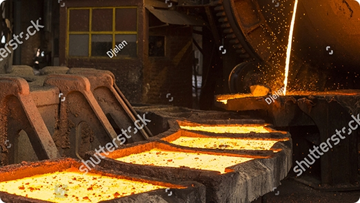

Экономическая оценка эффективности инвестиций в энергосберегающие регулируемые электроприводы конвейеров горно-обогатительных комбинатов
На горно-обогатительных комбинатах (ГОКах) Криворожского железорудного бассейна широкое распространение получили мощные конвейерные установки, используемые для транспортировки руды и скальной породы из карьеров на объекты поверхностного комплекса [1]. Установленная мощность приводных электродвигателей наиболее энергоемких конвейерных установок достигает 3-4 МВт на конвейер, при этом транспортировка руды из карьера на поверхность осуществляется по 2-3-стадийной схеме, учитывая горно-геологические условия карьера. Основной резерв повышения эффективности конвейерных установок ГОКов обусловлен применением нерегулируемых по скорости систем электропривода, проектные решения по которым принимались без учета задач энергосбережения. Проекты последних лет стали предусматривать возможность регулирования скорости мощных конвейеров, однако ряд эксплуатационных факторов препятствует широкому внедрению в практику режимов энергосберегающего регулирования скорости.
Ритмичность работы конвейерных установок в значительной степени определяется характером внутрикарьерных грузопотоков, формируемых в условиях существующей технологии открытых горных работ и центрально-поточной технологии (ЦПТ) доставки. Опыт эксплуатации карьеров Криворожского бассейна свидетельствует о наличии больших колебаний фактической производительности грузопотока, поступающего на конвейерные установки ЦПТ. Неравномерность поступления руды к конвейерам во многом обусловливает переменный режим работы конвейера, который в условиях нерегулируемой скорости характеризуется неравномерностью загрузки ленты конвейера, фактические значения которой, как правило, намного ниже номинального (проектного) значения. Недогруз конвейера приводит к тому, что значительная часть электроэнергии, расходуемой на привод конвейера, используется вхолостую.
Известно большое количество публикаций относительно необходимости и эффективности различных способов регулирования скорости конвейерных установок. Эти вопросы подробно рассматривались в работах [2-5]. Основные направления исследований посвящены вопросам обоснования систем электропривода, обеспечения требуемых пусковых режимов конвейеров, выбора преобразователя частоты для регулирования скорости конвейера, оценке влияния скорости на износ конвейерной ленты и т.п. Однако, с учетом того, что для большинства эксплуатируемых конвейерных установок обеспечение режима регулирования скорости связано с необходимостью инвестиционных затрат, вопросы обоснования эффективности капвложений в регулирование скорости конвейеров исследованы недостаточно.
Исследованиями, выполненными в условиях Анновского и Первомайского карьеров ПАО «СевГОК», определены статистические характеристики неравномерности поступающего на конвейерные установки грузопотока. Гистограммы распределения фактических нагрузок по руде и скальной породе (часовая производительность) по условиям анализа репрезентативных выборок представлены на рис. 1-2.
Представленные данные говорят о достаточно широком диапазоне изменения нагрузок конвейерных установок, что предопределяет необходимость исследования экономически целесообразной глубины регулирования скорости конвейеров. В качестве приводного двигателя для тяжелых конвейеров наиболее часто используют асинхронный двигатель с фазным ротором. Этот вариант является наиболее приемлемым как с точки зрения технологических и эксплуатационных параметров (надежность, перегрузочная способность, пусковые характеристики), так и по экономическим соображениям. При этом для привода мощных конвейеров используют 2-х и 3-х двигательную схему. Регулирование скорости таких двигателей обеспечивается системой асинхронно-вентильного каскада (АВК) с отдачей энергии скольжения ротора при регулировании скорости в электрическую сеть.
Оценим составляющие затратной и доходной частей проекта регулируемого по скорости конвейера для номинальных параметров электропривода (3х1000кВт) в условиях ЦПТ Первомайского карьера ПАО «СевГОК».